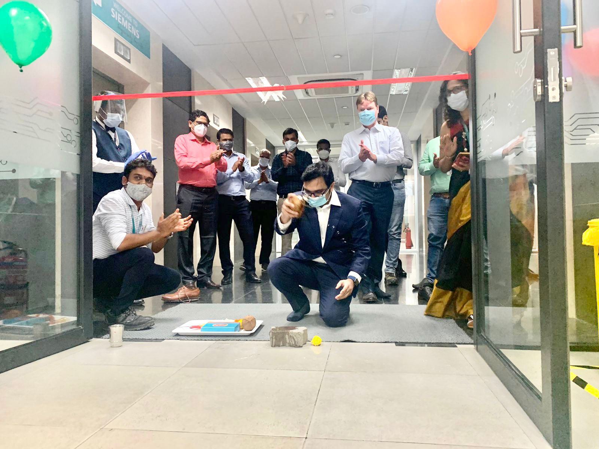

If there’s one thing the past year has taught us is that the support of one another is extremely important. When we’re #InThisTogether, we can overcome even the most difficult of times. During the pandemic, it was important to have a support system for our employees and their families. It was also necessary to have a forum for employees to come together and share their experiences.
Strong Foundations for Future Growth

As we come closer to the end of FY21, in retrospect, I can say that it has been a very successful year for IT HUB. We crossed 100 HC a few weeks back and will be continuing our growth journey throughout FY22. With an average age of 31 years and gender diversity of 34% within the team, it is not only about how many but also about what value we as IT HUB are creating for our business.
I can say proudly that as of today, there are more than 40 services where IT HUB is a part of and are getting delivered to all SMO BUs and this number is bound to go up in FY22. We have invested significantly this year on learning and development programs to enable our colleagues to take on new challenges.
Talking about challenges, there are certain key decisions taken by SAG in FY20 and FY 21 which directly affected SMO IT. First was to re-integrate with SAG and second was having governance reporting to IT. With these decisions, we as IT HUB had to redesign our strategy to suit the current organizational structure and demand to continue supporting future growth for SMO as a business. We have many key projects such as PLM implementation, SHERPA, SASCIA etc. in our horizon and we need to build the skills and the capacity to support these complex projects for having an impact on the entire Mobility business.
Though the pandemic is not over yet, the situation as of today has much improved as compared to last quarter, thanks to the efforts of all relevant agencies, volunteers and Siemens. As IT HUB will be co-locating with COBRA team for office space, we took this opportunity to inaugurate our new office located in Cummins campus after taking all the recommended precautions.
COBRA and IT HUB management teams were present at the event and meeting colleagues face to face for the first time after a year and half was truly a wonderful experience. We sincerely hope that the pandemic situation will improve and it will allow us more such interactions in the near future.
I would like to thank all of you who made this IT HUB journey of the last one and half years possible and look forward to many more such opportunities. Wish everyone all the very best for FY22.
